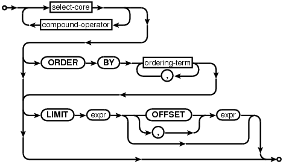
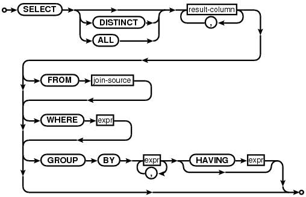
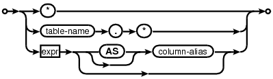
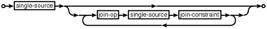
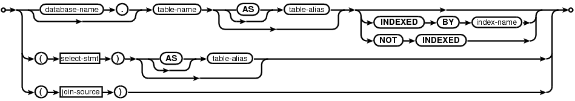
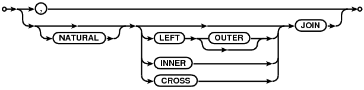
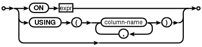
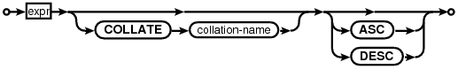

Choose any three.
|
|
SQL As Understood By SQLite
SELECT
select-stmt:

select-core:

result-column:

join-source:

single-source:

join-op:

join-constraint:

ordering-term:

compound-operator:

The SELECT statement is used to query the database. The result of a SELECT is zero or more rows of data where each row has a fixed number of columns.
The SELECT statement is the most complicated command in the SQL language. To make the description easier to follow, some of the passages below describe the way the data returned by a SELECT statement is determined as a series of steps. It is important to keep in mind that this is purely illustrative - in practice neither SQLite nor any other SQL engine is required to follow this or any other specific process.
Simple Select Processing
The syntax for a simple SELECT statement is depicted in the select-core syntax diagram. Generating the results of a simple SELECT statement is presented as a four step process in the description below:
-
FROM clause processing: The input data for the simple SELECT is determined. The input data is either implicitly a single row with 0 columns (if there is no FROM clause) or is determined by analyzing the join-source specification that follows an explicit FROM clause.
-
WHERE clause processing: The input data is filtered using the WHERE clause expression.
-
GROUP BY, HAVING and result-column expression processing: The set of result rows is computed by aggregating the data according to any GROUP BY clause and calculating the result-set expressions for the rows of the filtered input dataset.
-
DISTINCT/ALL keyword processing: If the query is a "SELECT DISTINCT" query, duplicate rows are removed from the set of result rows.
There are two types of simple SELECT statement - aggregate and non-aggregate queries. A simple SELECT statement is an aggregate query if it contains either a GROUP BY clause or one or more aggregate functions in the result-set. Otherwise, if a simple SELECT contains no aggregate functions or a GROUP BY clause, it is a non-aggregate query.
1. Determination of input data (FROM clause processing).
The input data used by a simple SELECT query is a set of N rows each M columns wide.
If the FROM clause is omitted from a simple SELECT statement, then the input data is implicitly a single row zero columns wide (i.e. N=1 and M=0).
If a FROM clause is specified, the data on which a simple SELECT query operates comes from the one or more tables or subqueries (SELECT statements in parenthesis) specified following the FROM keyword. A sub-select specified in the join-source following the FROM clause in a simple SELECT statement is handled as if it was a table containing the data returned by executing the sub-select statement. Each column of the sub-select dataset inherits the collation sequence and affinity of the corresponding expression in the sub-select statement.
If there is only a single table in the join-source following the FROM clause, then the input data used by the SELECT statement is the contents of the named table. If there is more than one table specified as part of the join-source following the FROM keyword, then the contents of each named table are joined into a single dataset for the simple SELECT statement to operate on. Exactly how the data is combined depends on the specific join-op and join-constraint used to connect the tables or subqueries together.
All joins in SQLite are based on the cartesian product of the left and right-hand datasets. The columns of the cartesian product dataset are, in order, all the columns of the left-hand dataset followed by all the columns of the right-hand dataset. There is a row in the cartesian product dataset formed by combining each unique combination of a row from the left-hand and right-hand datasets. In other words, if the left-hand dataset consists of Nlhs rows of Mlhs columns, and the right-hand dataset of Nrhs rows of Mrhs columns, then the cartesian product is a dataset of Nlhs.Nrhs rows, each containing Mlhs+Mrhs columns.
If the join-op is "CROSS JOIN", "INNER JOIN", "JOIN" or a comma (",") and there is no ON or USING clause, then the result of the join is simply the cartesian product of the left and right-hand datasets. There is no difference between the "INNER JOIN", "JOIN" and "," join operators. The "CROSS JOIN" join operator produces the same data as the "INNER JOIN", "JOIN" and "," operators, but is handled slightly differently by the query optimizer. Otherwise, it is the cartesian product modified according to one or more of the following bullet points:
-
If there is an ON clause specified, then the ON expression is evaluated for each row of the cartesian product as a boolean expression. All rows for which the expression evaluates to false are excluded from the dataset.
-
If there is a USING clause specified as part of the join-constraint, then each of the column names specified must exist in the datasets to both the left and right of the join-op. For each pair of namesake columns, the expression "lhs.X = rhs.X" is evaluated for each row of the cartesian product as a boolean expression. All rows for which one or more of the expressions evaluates to false are excluded from the result set. When comparing values as a result of a USING clause, the normal rules for handling affinities, collation sequences and NULL values in comparisons apply. The column from the dataset on the left-hand side of the join operator is considered to be on the left-hand side of the comparison operator (=) for the purposes of collation sequence and affinity precedence.
For each pair of columns identified by a USING clause, the column from the right-hand dataset is omitted from the joined dataset. This is the only difference between a USING clause and its equivalent ON constraint.
-
If the NATURAL keyword is added to any of the join-ops, then an implicit USING clause is added to the join-constraints. The implicit USING clause contains each of the column names that appear in both the left and right-hand input datasets. If the left and right-hand input datasets feature no common column names, then the NATURAL keyword has no effect on the results of the join. A USING or ON clause may not be added to a join that specifies the NATURAL keyword.
-
If the join-op is a "LEFT JOIN" or "LEFT OUTER JOIN", then after the ON or USING filtering clauses have been applied, an extra row is added to the output for each row in the original left-hand input dataset that corresponds to no rows at all in the composite dataset (if any). The added rows contain NULL values in the columns that would normally contain values copied from the right-hand input dataset.
When more than two tables are joined together as part of a FROM clause, the join operations are processed in order from left to right. In other words, the FROM clause (A join-op-1 B join-op-2 C) is computed as ((A join-op-1 B) join-op-2 C).
If a WHERE clause is specified, the WHERE expression is evaluated for each row in the input data as a boolean expression. All rows for which the WHERE clause expression evaluates to false are excluded from the dataset before continuing.
3. Generation of the set of result rows.
Once the input data from the FROM clause has been filtered by the WHERE clause expression (if any), the set of result rows for the simple SELECT are calculated. Exactly how this is done depends on whether the simple SELECT is an aggregate or non-aggregate query, and whether or not a GROUP BY clause was specified.
The list of expressions between the SELECT and FROM keywords is known as the result expression list. If a result expression is the special expression "*" then all columns in the input data are substituted for that one expression. If the expression is the alias of a table or subquery in the FROM clause followed by ".*" then all columns from the named table or subquery are substituted for the single expression. It is an error to use a "*" or "alias.*" expression in any context other than than a result expression list. It is also an error to use a "*" or "alias.*" expression in a simple SELECT query that does not have a FROM clause.
The number of columns in the rows returned by a simple SELECT statement is equal to the number of expressions in the result expression list after substitution of * and alias.* expressions. Each result row is calculated by evaluating the expressions in the result expression list with respect to a single row of input data or, for aggregate queries, with respect to a group of rows.
If the SELECT statement is a non-aggregate query, then each expression in the result expression list is evaluated for each row in the dataset filtered by the WHERE clause.
If the SELECT statement is an aggregate query without a GROUP BY clause, then each aggregate expression in the result-set is evaluated once across the entire dataset. Each non-aggregate expression in the result-set is evaluated once for an arbitrarily selected row of the dataset. The same arbitrarily selected row is used for each non-aggregate expression. Or, if the dataset contains zero rows, then each non-aggregate expression is evaluated against a row consisting entirely of NULL values.
The single row of result-set data created by evaluating the aggregate and non-aggregate expressions in the result-set forms the result of an aggregate query without a GROUP BY clause. An aggregate query without a GROUP BY clause always returns exactly one row of data, even if there are zero rows of input data.
If the SELECT statement is an aggregate query with a GROUP BY clause, then each of the expressions specified as part of the GROUP BY clause is evaluated for each row of the dataset. Each row is then assigned to a "group" based on the results; rows for which the results of evaluating the GROUP BY expressions are the same are assigned to the same group. For the purposes of grouping rows, NULL values are considered equal. The usual rules for selecting a collation sequence with which to compare text values apply when evaluating expressions in a GROUP BY clause. The expressions in the GROUP BY clause do not have to be expressions that appear in the result. The expressions in a GROUP BY clause may not be aggregate expressions.
If a HAVING clause is specified, it is evaluated once for each group of rows as a boolean expression. If the result of evaluating the HAVING clause is false, the group is discarded. If the HAVING clause is an aggregate expression, it is evaluated across all rows in the group. If a HAVING clause is a non-aggregate expression, it is evaluated with respect to an arbitrarily selected row from the group. The HAVING expression may refer to values, even aggregate functions, that are not in the result.
Each expression in the result-set is then evaluated once for each group of rows. If the expression is an aggregate expression, it is evaluated across all rows in the group. Otherwise, it is evaluated against a single arbitrarily chosen row from within the group. If there is more than one non-aggregate expression in the result-set, then all such expressions are evaluated for the same row.
Each group of input dataset rows contributes a single row to the set of result rows. Subject to filtering associated with the DISTINCT keyword, the number of rows returned by an aggregate query with a GROUP BY clause is the same as the number of groups of rows produced by applying the GROUP BY and HAVING clauses to the filtered input dataset.
4. Removal of duplicate rows (DISTINCT processing).
One of the ALL or DISTINCT keywords may follow the SELECT keyword in a simple SELECT statement. If the simple SELECT is a SELECT ALL, then the entire set of result rows are returned by the SELECT. If neither ALL or DISTINCT are present, then the behaviour is as if ALL were specified. If the simple SELECT is a SELECT DISTINCT, then duplicate rows are removed from the set of result rows before it is returned. For the purposes of detecting duplicate rows, two NULL values are considered to be equal. The normal rules for selecting a collation sequence to compare text values with apply.
Compound Select Statements
Two or more simple SELECT statements may be connected together to form a compound SELECT using the UNION, UNION ALL, INTERSECT or EXCEPT operator. In a compound SELECT, all the constituent SELECTs must return the same number of result columns. As the components of a compound SELECT must be simple SELECT statements, they may not contain ORDER BY or LIMIT clauses. ORDER BY and LIMIT clauses may only occur at the end of the entire compound SELECT.
A compound SELECT created using UNION ALL operator returns all the rows from the SELECT to the left of the UNION ALL operator, and all the rows from the SELECT to the right of it. The UNION operator works the same way as UNION ALL, except that duplicate rows are removed from the final result set. The INTERSECT operator returns the intersection of the results of the left and right SELECTs. The EXCEPT operator returns the subset of rows returned by the left SELECT that are not also returned by the right-hand SELECT. Duplicate rows are removed from the results of INTERSECT and EXCEPT operators before the result set is returned.
For the purposes of determining duplicate rows for the results of compound SELECT operators, NULL values are considered equal to other NULL values and distinct from all non-NULL values. The collation sequence used to compare two text values is determined as if the columns of the left and right-hand SELECT statements were the left and right-hand operands of the equals (=) operator, except that greater precedence is not assigned to a collation sequence specified with the postfix COLLATE operator. No affinity transformations are applied to any values when comparing rows as part of a compound SELECT.
When three or more simple SELECTs are connected into a compound SELECT, they group from left to right. In other words, if "A", "B" and "C" are all simple SELECT statements, (A op B op C) is processed as ((A op B) op C).
ORDER BY and LIMIT/OFFSET Clauses
If a SELECT statement that returns more than one row does not have an ORDER BY clause, the order in which the rows are returned is undefined. Or, if a SELECT statement does have an ORDER BY clause, then the list of expressions attached to the ORDER BY determine the order in which rows are returned to the user. Rows are first sorted based on the results of evaluating the left-most expression in the ORDER BY list, then ties are broken by evaluating the second left-most expression and so on. The order in which two rows for which all ORDER BY expressions evaluate to equal values are returned is undefined. Each ORDER BY expression may be optionally followed by one of the keywords ASC (smaller values are returned first) or DESC (larger values are returned first). If neither ASC or DESC are specified, rows are sorted in ascending (smaller values first) order by default.
Each ORDER BY expression is processed as follows:
If the ORDER BY expression is a constant integer K then the expression is considered an alias for the K-th column of the result set (columns are numbered from left to right starting with 1).
If the ORDER BY expression is an identifier that corresponds to the alias of one of the output columns, then the expression is considered an alias for that column.
Otherwise, if the ORDER BY expression is any other expression, it is evaluated and the returned value used to order the output rows. If the SELECT statement is a simple SELECT, then an ORDER BY may contain any arbitrary expressions. However, if the SELECT is a compound SELECT, then ORDER BY expressions that are not aliases to output columns must be exactly the same as an expression used as an output column.
For the purposes of sorting rows, values are compared in the same way as for comparison expressions. The collation sequence used to compare two text values is determined as follows:
If the ORDER BY expression is assigned a collation sequence using the postfix COLLATE operator, then the specified collation sequence is used.
Otherwise, if the ORDER BY expression is an alias to an expression that has been assigned a collation sequence using the postfix COLLATE operator, then the collation sequence assigned to the aliased expression is used.
Otherwise, if the ORDER BY expression is a column or an alias of an expression that is a column, then the default collation sequence for the column is used.
Otherwise, the BINARY collation sequence is used.
In a compound SELECT statement, all ORDER BY expressions are handled as aliases for one of the result columns of the compound SELECT. If an ORDER BY expression is not an integer alias, then SQLite searches the left-most SELECT in the compound for a result column that matches either the second or third rules above. If a match is found, the search stops and the expression is handled as an alias for the result column that it has been matched against. Otherwise, the next SELECT to the right is tried, and so on. If no matching expression can be found in the result columns of any constituent SELECT, it is an error. Each term of the ORDER BY clause is processed separately and may be matched against result columns from different SELECT statements in the compound.
The LIMIT clause is used to place an upper bound on the number of rows returned by a SELECT statement. Any scalar expression may be used in the LIMIT clause, so long as it evaluates to an integer or a value that can be losslessly converted to an integer. If the expression evaluates to a NULL value or any other value that cannot be losslessly converted to an integer, an error is returned. If the LIMIT expression evaluates to a negative value, then there is no upper bound on the number of rows returned. Otherwise, the SELECT returns the first N rows of its result set only, where N is the value that the LIMIT expression evaluates to. Or, if the SELECT statement would return less than N rows without a LIMIT clause, then the entire result set is returned.
The expression attached to the optional OFFSET clause that may follow a LIMIT clause must also evaluate to an integer, or a value that can be losslessly converted to an integer. If an expression has an OFFSET clause, then the first M rows are omitted from the result set returned by the SELECT statement and the next N rows are returned, where M and N are the values that the OFFSET and LIMIT clauses evaluate to, respectively. Or, if the SELECT would return less than M+N rows if it did not have a LIMIT clause, then the first M rows are skipped and the remaining rows (if any) are returned. If the OFFSET clause evaluates to a negative value, the results are the same as if it had evaluated to zero.
Instead of a separate OFFSET clause, the LIMIT clause may specify two scalar expressions separated by a comma. In this case, the first expression is used as the OFFSET expression and the second as the LIMIT expression. This is counter-intuitive, as when using the OFFSET clause the second of the two expressions is the OFFSET and the first the LIMIT. This is intentional - it maximizes compatibility with other SQL database systems.